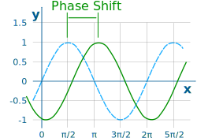
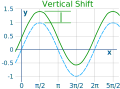
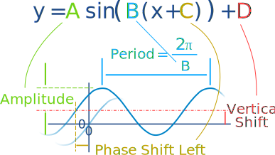
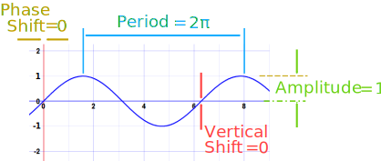
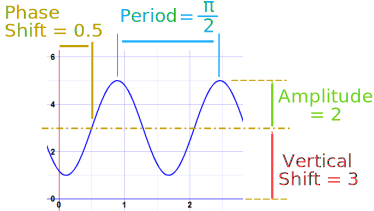
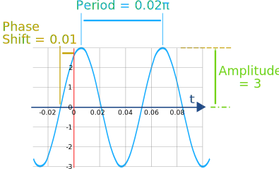
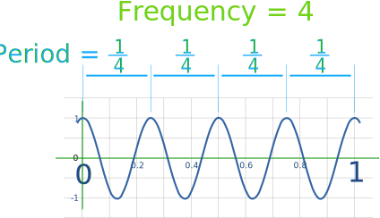

Amplitude, Period, Phase Shift and Frequency
Some functions (like Sine and Cosine) repeat forever
and are called Periodic Functions.
The Period goes from one peak to the next (or from any point to the next matching point):

The Amplitude is the height from the center line to the peak (or to the trough). Or we can measure the height from highest to lowest points and divide that by 2.

The Phase Shift is how far the function is shifted horizontally from the usual position.

The Vertical Shift is how far the function is shifted vertically from the usual position.
All Together Now!
We can have all of them in one equation:
y = A sin(B(x + C)) + D
- amplitude is A
- period is 2π/B
- phase shift is C (positive is to the left)
- vertical shift is D
And here is how it looks on a graph:

Note that we are using radians here, not degrees, and there are 2π radians in a full rotation.
Example: sin(x)
This is the basic unchanged sine formula. A = 1, B = 1, C = 0 and D = 0
So amplitude is 1, period is 2π, there is no phase shift or vertical shift:

Example: 2 sin(4(x − 0.5)) + 3
- amplitude A = 2
- period 2π/B = 2π/4 = π/2
- phase shift = −0.5 (or 0.5 to the right)
- vertical shift D = 3

In words:
- the 2 tells us it will be 2 times taller than usual, so Amplitude = 2
- the usual period is 2π, but in our case that is "sped up" (made shorter) by the 4 in 4x, so Period = π/2
- and the −0.5 means it will be shifted to the right by 0.5
- lastly the +3 tells us the center line is y = +3, so Vertical Shift = 3
Instead of x we can have t (for time) or maybe other variables:
Example: 3 sin(100t + 1)
First we need brackets around the (t+1), so we can start by dividing the 1 by 100:
3 sin(100t + 1) = 3 sin(100(t + 0.01))
Now we can see:
- amplitude is A = 3
- period is 2π/100 = 0.02 π
- phase shift is C = 0.01 (to the left)
- vertical shift is D = 0
And we get:

Frequency
Frequency is how often something happens per unit of time (per "1").
Example: Here the cosine function repeats 4 times between 0 and 1:

So the Frequency is 4
And the Period is 1 4
In fact the Period and Frequency are related:
Frequency = 1 Period
Period = 1 Frequency
Example from before: 3 sin(100(t + 0.01))
The period is 0.02π
So the Frequency is 1 0.02π = 50 π
Some more examples:
| Period | Frequency |
|---|---|
| 1 10 | 10 |
| 1 4 | 4 |
| 1 | 1 |
| 5 | 1 5 |
| 100 | 1 100 |
When frequency is per second it is called "Hertz".
Example: 50 Hertz means 50 times per second
The faster it bounces the more it "Hertz"!
Animation